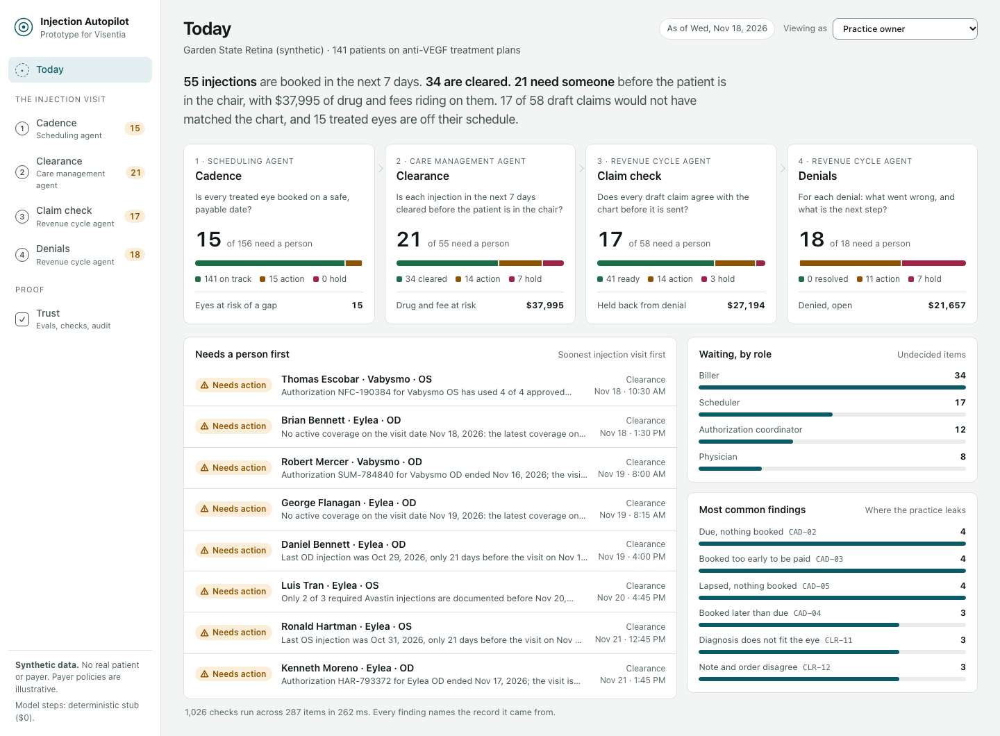
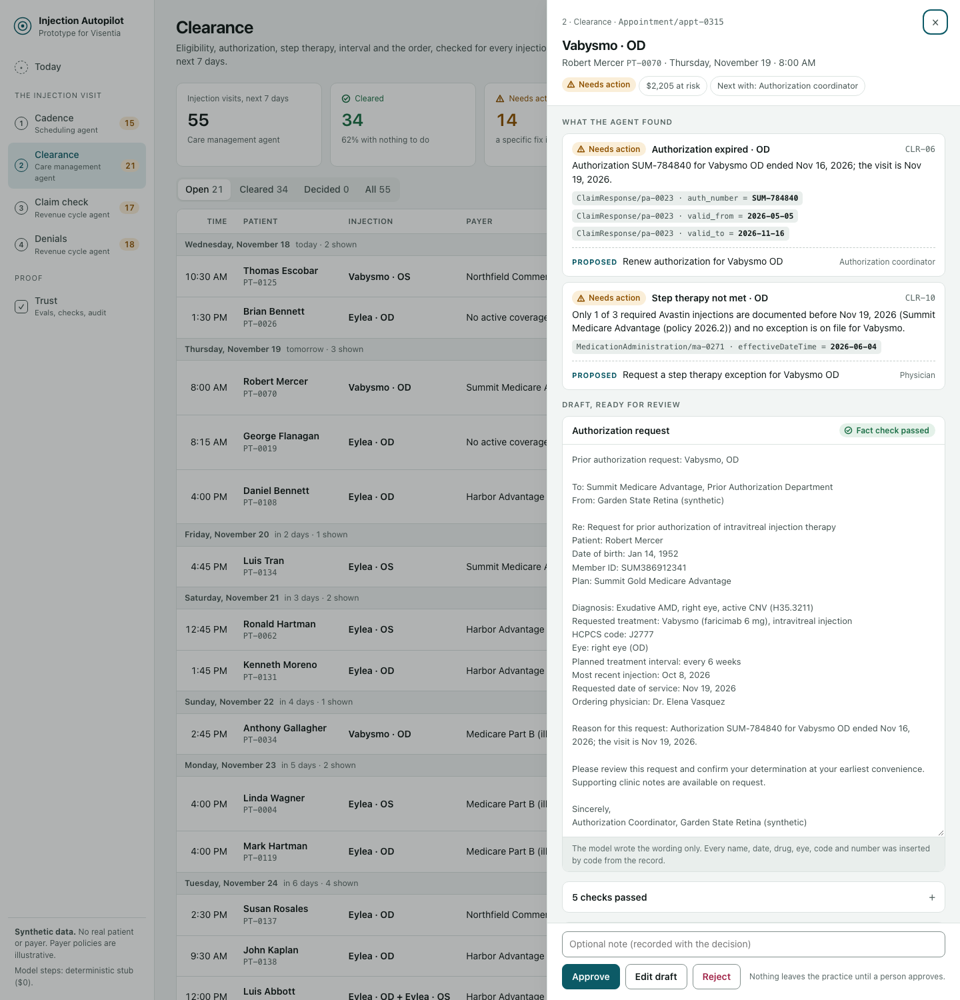
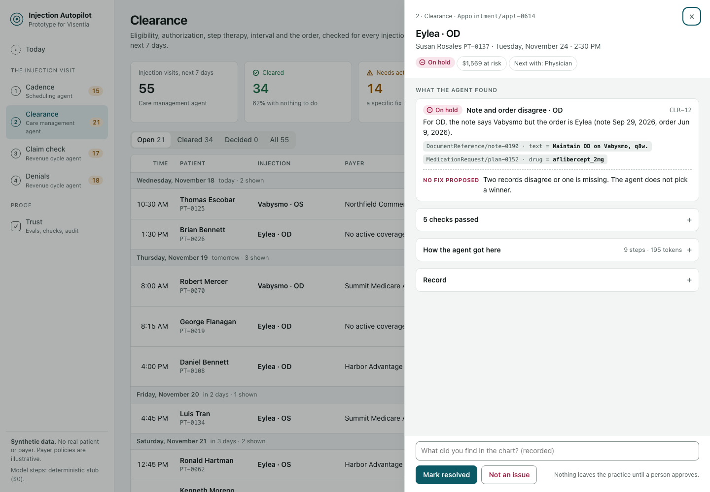
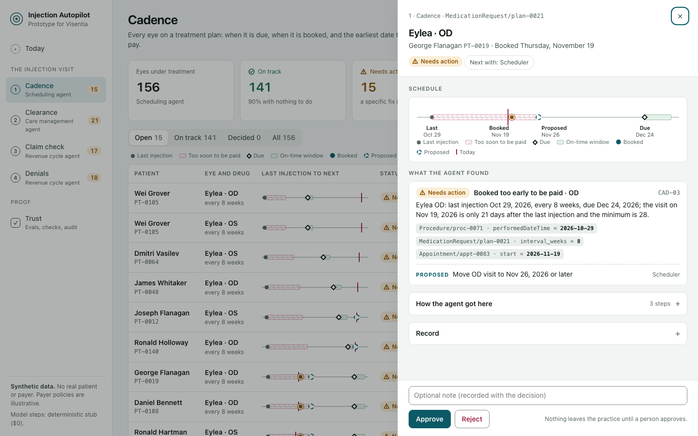
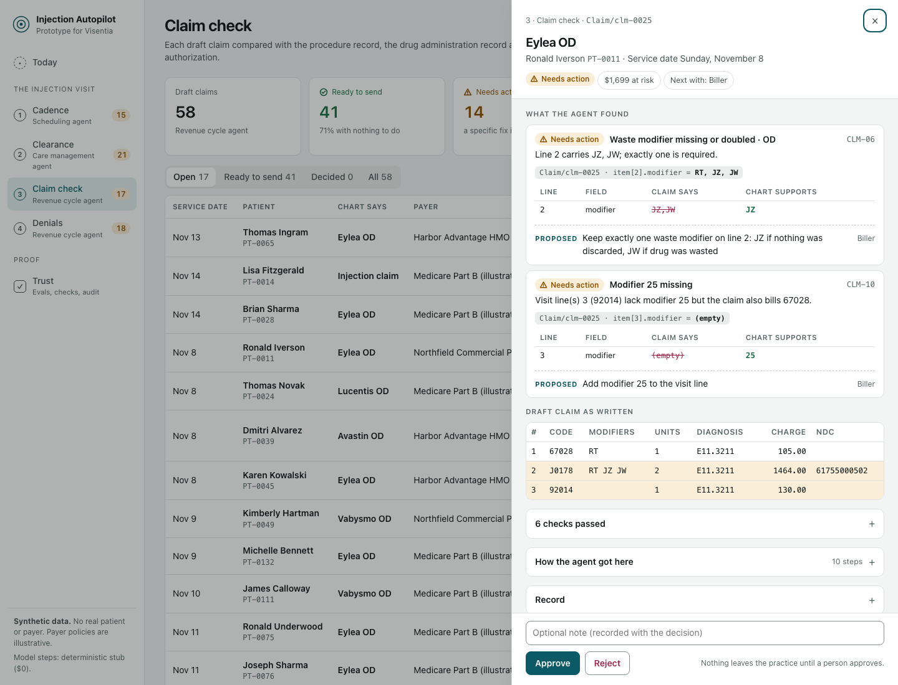
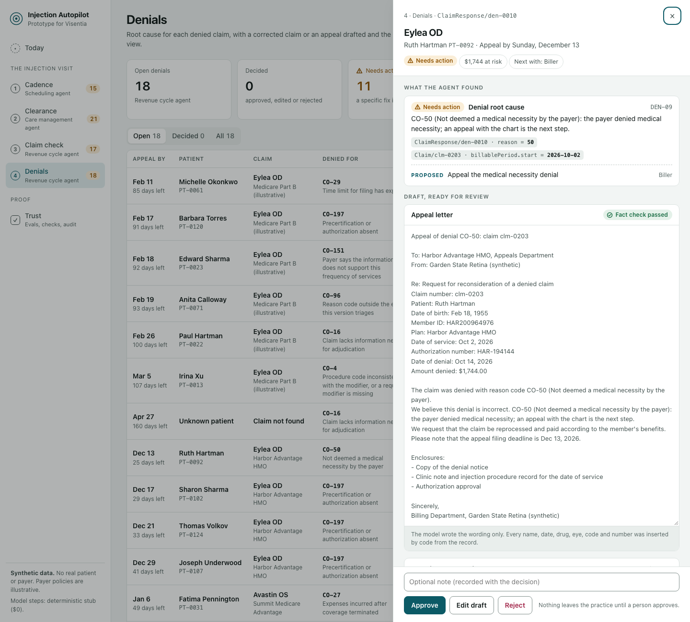

Injection Autopilot
Visentia's roadmap lists a scheduling agent, a care management agent and an RCM agent. In a retina practice all three meet at one thing: the injection visit. This prototype is one engine that follows every anti-VEGF injection through four checkpoints and tells the right person what to do before the patient is in the chair and before the claim goes out.
1 · WHY THIS PROBLEMThe seams between your three agents are where a retina practice loses money and patients
I read visentia.ai, then looked at who else is building agents around eye care. Each neighbour owns one checkpoint. Nobody I found joins them at the level a retina practice actually runs on: one eye, one drug, one payer, one date.
| Checkpoint | Who covers it today | What is left open |
|---|---|---|
| Scheduling and calls | Assort Health ($1.2B valuation, already integrated with Nextech), EliseAI | They book visits. They do not know the earliest date a payer will pay for the same eye |
| Prior authorization | SamaCare (retina page), GenHealth AI; Cohere on the payer side | They submit requests. They are not tied to tomorrow's injection schedule or to the claim |
| Drug inventory and buy-and-bill | McKesson RetinaOS, AllyGPO / BioCareSD | Comes with a drug-purchasing relationship |
| Claims and denials | ModMed's planned billing assistant; horizontal RCM vendors | General ophthalmology. No check of the claim against the injection record |
Three facts from the research shaped the design. Sources and my confidence in each are in docs/research.md.
- The pain is delay, not denial. In a multicenter study of more than 2,200 anti-VEGF authorization requests, about 96% were approved but about 60% were delayed more than 24 hours. So the product looks seven days ahead.
- The practice has already paid for the drug. Almost all anti-VEGF is buy-and-bill. A denied dose is roughly $1,500 (Eylea) to $2,400 (Eylea HD) at Medicare limits.
- Patients drop off. About 22% of wet AMD patients had a gap of a year or more over four years (Obeid 2018). A scheduler can fix that if someone tells them who.
The recommendation that follows for build versus buy: buy the horizontal parts (voice, scribe, payer connectivity) and build the retina logic and the cross-checks, which nobody sells and which a retina surgeon is uniquely placed to get right.
2 · WHAT IT DOESOne engine, four checkpoints, three desks
Cadence
Scheduling agentIs every treated eye booked on a safe, payable date? Finds lapsed eyes, visits booked too early to be paid, and visits booked late.
SchedulerClearance
Care management agentIs each injection in the next 7 days cleared? Eligibility, authorization, step therapy, interval, and whether the visit matches the order and the note.
Authorization coordinatorClaim check
RCM agentDoes the draft claim agree with the chart? Eye modifier, drug code and units, waste modifier, NDC, diagnosis, authorization number.
BillerDenials
RCM agent, "denials autopilot"What went wrong, and is it a corrected claim or an appeal? Root cause, a drafted letter, and the deadline.
BillerOn the synthetic practice (141 patients, 156 treated eyes), this is what it found:
3 · A TOURWhat each person sees






4 · WHO DECIDES WHATCode checks, a model handles language, a person approves
The worst failure in this domain is a wrong eye, drug, dose, date or authorization number. So no model ever writes one.
| Step | Who | Why |
|---|---|---|
| Intervals, authorization windows, units, modifiers, eligibility | code | A date subtraction is right every time and costs nothing |
| Reading the plan sentence in the clinic note | model | Fuzzy language. Patient identifiers are removed first, and code compares what it read with the structured order |
| Wording of authorization requests, appeals and patient texts | model | It writes a template. Its prompt holds the letter type and the fact names only, so no PHI goes to a model for drafting. Code fills every fact, and a draft with a digit, drug or eye outside a placeholder cannot be approved |
| Two records that disagree | person | The item goes on hold and the agent proposes nothing |
| Anything that leaves the practice | person | Approve, edit or reject. Recorded with role and note; every decision is kept |
With no API key in this environment, the two model steps ran on a deterministic stand-in, so the whole build cost $0 at run time. The pipeline, the redaction and the fact checks around those steps are the real ones. The live path exists behind a budget guard and has not yet been run against a live model.
5 · HOW I KNOW IT'S RIGHTFour independent checks, on everything rather than a sample
What the full check caught that the tests had missed
One finding cited productOrService = "none" as its evidence: a value that exists in no record. The 210 unit tests and the 52 blind cases had all passed. The check that traces every evidence row back to the raw bundle failed on that one row out of 1,581. It became a test, then a fix. That is why the check covers every record, not a sample.
The check also has teeth. Five fault injections run with the tests: flip one eye in the bundle, corrupt one evidence row, put a patient name in a prompt, and edit the answer key both ways. Each one is caught.
6 · HOW IT WAS BUILTSpec first, checks independent of the code
- Scout and understandResearch on Visentia and the market; billing rules from AAO, ASRS, CMS and Retina Today, each tagged with how sure I am. Seven design questions, with the answer I assumed and the decision it caused.
- Contracts and spec firstData shapes and a rule table with an id for every rule, committed before any logic.
- One visit end to endSynthetic FHIR data and ingest, the rules and the model layer, built against the contracts, then the orchestrator, the API and the interface.
- Independent checksLabelled cases written from the spec alone, and a verifier that reads the raw bundle without reusing the ingest code.
- Interface, then reviewA design review and a review against the pass/fail criteria, once each, at the end. Decisions were logged as I went.
7 · WHAT REVIEWERS SAIDOne design review and one expert panel
Both reviews were done independently of the build. I asked for scores and the smallest fixes, ran one round of fixes, and stopped. The scores below are the ones they gave before that round.
| Reviewer | Score | What they said | What I did |
|---|---|---|---|
| Designer: owner's 10-second read | 7 / 10 | The "needs a person first" list showed holds from next week above today's uncleared visits | fixed Soonest injection visit first |
| Designer: coordinator's queue | 6 / 10 | Clipped column, 24-hour times, three names for one state, draft letter scrolling inside its box | fixed All four |
| Designer: trust and explainability | 8 / 10 | Evidence chips, "no fix proposed" and the claim diff are distinctive: do not touch | Left alone |
| Designer: visual craft and accessibility | 7 and 6 / 10 | Muted text at 4.1 to 4.4 contrast; input borders at 1.6 | fixed Now 5.0 and 3.3 |
| Panel: retina biller | 6 / 10 | Units, laterality codes and reason codes are right. Appeal windows were 180 days for every payer; step therapy has no established-patient exemption; the waste-modifier fix always proposed JZ | fixed Per-payer windows and the modifier wording. open Step-therapy exemption |
| Panel: data engineer and HIPAA reviewer | 6 / 10 | Prompts carry fact names only, which is good. But masking is not access control: the role comes from the request | fixed No role now means no names. open Real sign-in |
| Panel: product lead | 7 / 10 | A sharp wedge, but the proof is self-generated: the same build wrote the data and the answer key | open Replay on a design partner's de-identified claims and remits |
The panel ran all ten pass/fail criteria that were written before the build. Ten of ten passed, with no blockers. The product lead's point is the one I agree with most: every number on this page is measured against data I generated. The next proof has to come from a real practice.
8 · LIMITS AND NEXTWhat this is not, yet
Limits
- Synthetic data. The notes follow a known grammar, so the note reader looks better here than it would on real dictation.
- Billing rules follow public sources with mixed confidence. Some are marked "assumed" in
docs/domain_recon.md. - The model steps ran on a stand-in. The live path is untested.
- "Approve" records a decision. It does not submit to a payer, move an appointment or edit a claim.
- No sign-in. The role switch is a demo control.
Next, in order
- Connect one real source, read-only: ModMed or Nextech appointments and procedures.
- Test the note reader on de-identified notes labelled by a clinician.
- Eligibility and authorization status from a clearinghouse.
- Drug inventory: is the vial for tomorrow's cleared injections on the shelf.
- A morning summary where staff already work, and the patient text from the outreach draft.
9 · QUESTIONS FOR YOUWhere my assumptions are most likely wrong
- Which EHR and practice-management system do your partner practices run?
- Where does prior authorization hurt most: the first request, renewals, or step-therapy exceptions?
- Is the treat-and-extend interval a structured order in your charts, or only in the note? If only in the note, the model step becomes the primary source and needs a much larger test set.
- For same-day bilateral injections, do your payers want RT and LT on two lines or modifier 50? I did not guess.
- Which of the checks in this prototype would your billers call wrong?